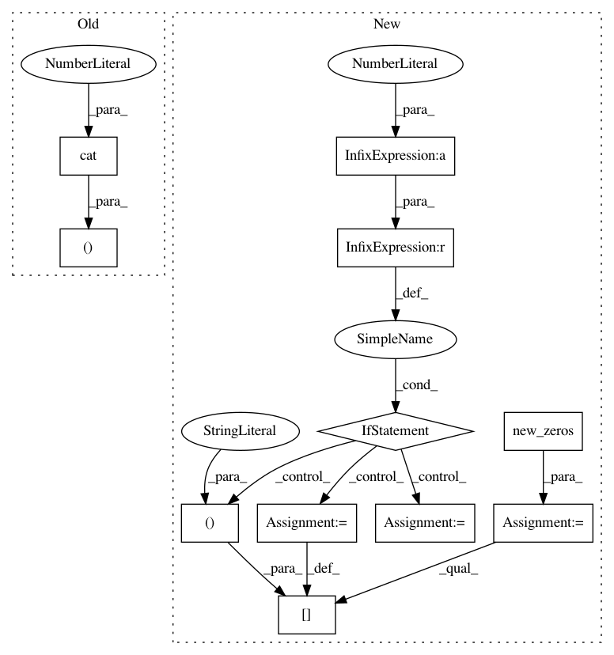

6dc79d867cea8e9ed4737d7449ad9481fd6492d2,s2cnn/soft/so3_fft.py,,_so3_rfft,#Any#Any#Any#Any#,85
Before Change
output.fill_(0)
for l in range(min(b_in, b_out)):
s = slice(l * (4 * l**2 - 1) // 3, l * (4 * l**2 - 1) // 3 + (2 * l + 1) ** 2)
xx = torch.cat((x[:, :, -l:], x[:, :, :l + 1]), dim=2) if l > 0 else x[:, :, :1]
xx = torch.cat((xx[:, :, :, -l:], xx[:, :, :, :l + 1]), dim=3) if l > 0 else xx[:, :, :, :1]
out = torch.einsum("bmn,zbmnc->mnzc", (wigner[:, s].view(-1, 2 * l + 1, 2 * l + 1), xx))
output[s] = out.view((2 * l + 1) ** 2, -1, 2)
After Change
output.fill_(0)
for l in range(b_out):
s = slice(l * (4 * l**2 - 1) // 3, l * (4 * l**2 - 1) // 3 + (2 * l + 1) ** 2)
l1 = min(l, b_in - 1) // if b_out > b_in, consider high frequencies as null
xx = x.new_zeros((x.size(0), x.size(1), 2 * l + 1, 2 * l + 1, 2))
xx[:, :, l: l + l1 + 1, l: l + l1 + 1] = x[:, :, :l1 + 1, :l1 + 1]
if l1 > 0:
xx[:, :, l - l1:l, l: l + l1 + 1] = x[:, :, -l1:, :l1 + 1]
xx[:, :, l: l + l1 + 1, l - l1:l] = x[:, :, :l1 + 1, -l1:]
xx[:, :, l - l1:l, l - l1:l] = x[:, :, -l1:, -l1:]
out = torch.einsum("bmn,zbmnc->mnzc", (wigner[:, s].view(-1, 2 * l + 1, 2 * l + 1), xx))
output[s] = out.view((2 * l + 1) ** 2, -1, 2)
return output // [l * m * n, batch, complex]
In pattern: SUPERPATTERN
Frequency: 4
Non-data size: 11
Instances
Project Name: jonas-koehler/s2cnn
Commit Name: 6dc79d867cea8e9ed4737d7449ad9481fd6492d2
Time: 2018-08-07
Author: geiger.mario@gmail.com
File Name: s2cnn/soft/so3_fft.py
Class Name:
Method Name: _so3_rfft
Project Name: jonas-koehler/s2cnn
Commit Name: 6dc79d867cea8e9ed4737d7449ad9481fd6492d2
Time: 2018-08-07
Author: geiger.mario@gmail.com
File Name: s2cnn/soft/so3_fft.py
Class Name:
Method Name: _so3_fft
Project Name: ruotianluo/self-critical.pytorch
Commit Name: 8fae3aef46180186d420db3ec88fc747261f0d5c
Time: 2018-05-30
Author: rluo@ttic.edu
File Name: models/ShowTellModel.py
Class Name: ShowTellModel
Method Name: _sample